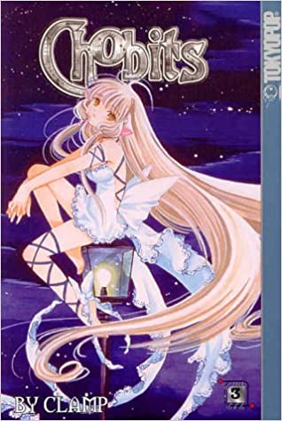

Chobits
Niedoszły student o imieniu Hideki Motosuwa przyjeżdża do miasta ze wsi, aby się uczyć w szkole przygotowawczej.
W Tokio wielu ludzi posiada swoje osobiste, humanoidalne roboty, zwane persoconami. Hidekiego nie stać na zakupienie takiego sprzętu,
lecz wkrótce znajduje kobiecego persocona na śmietniku, który nie potrafi jednak powiedzieć nic innego poza „Chii”.
Motosuwa zabiera go ze sobą do domu. Ponadto Hideki wraz z uczniem gimnazjum, Minoru Kokubunjim próbują rozwiązać zagadkę pochodzenia Chii
